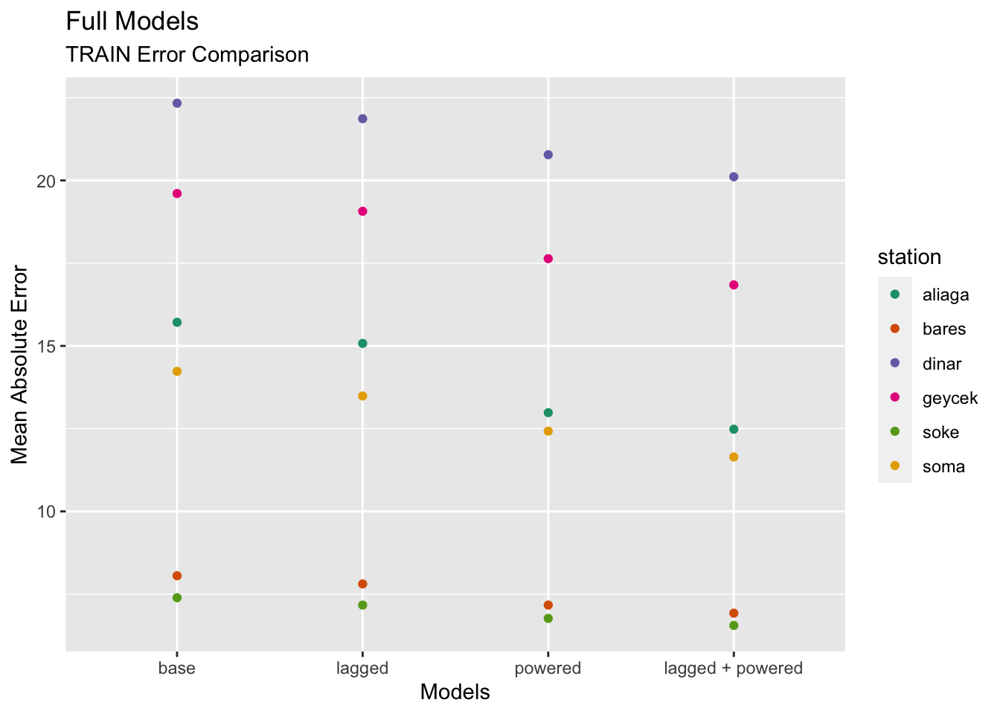
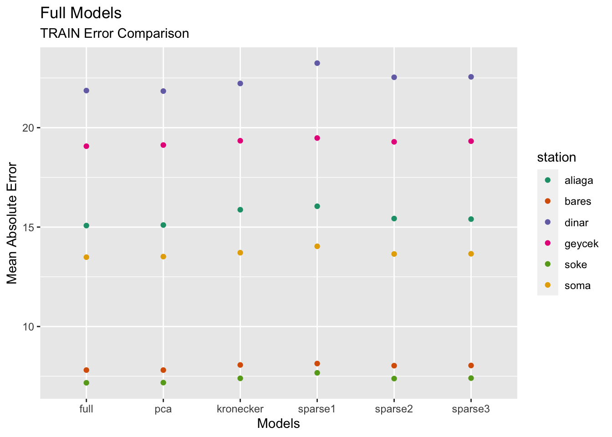
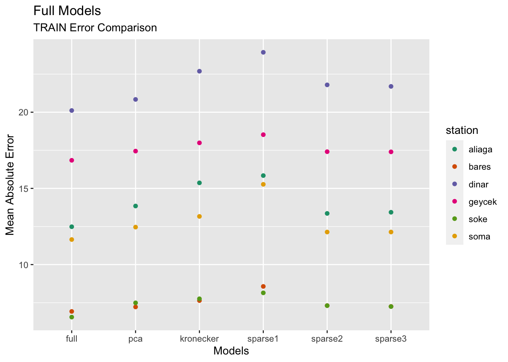

Wind Power Forecasting - Dimension Reduction
2022-03-10
Chapter 1 RESULTS
1.1 Full Models
Full Model Comparsion Table
results[order(station)]## station model train_error test_error
## 1: aliaga base 15.749330 15.779370
## 2: aliaga lagged 15.083126 15.381750
## 3: aliaga powered 12.968082 13.276253
## 4: aliaga lagged + powered 12.462900 13.259591
## 5: bares base 8.072013 8.647386
## 6: bares lagged 7.802838 8.443502
## 7: bares powered 7.163767 7.395969
## 8: bares lagged + powered 6.926500 7.296728
## 9: dinar base 22.303159 25.021587
## 10: dinar lagged 21.878399 24.637237
## 11: dinar powered 20.723720 24.433443
## 12: dinar lagged + powered 20.082280 24.255884
## 13: geycek base 19.631056 19.432637
## 14: geycek lagged 19.028241 18.911000
## 15: geycek powered 17.656956 17.890285
## 16: geycek lagged + powered 16.843447 17.537223
## 17: soke base 7.387029 7.993442
## 18: soke lagged 7.164470 7.851381
## 19: soke powered 6.767630 7.575407
## 20: soke lagged + powered 6.535189 7.606085
## 21: soma base 14.231200 16.079155
## 22: soma lagged 13.508555 15.245921
## 23: soma powered 12.368493 14.387454
## 24: soma lagged + powered 11.674458 13.696653
## station model train_error test_errorPlots
ggplot(results) +
geom_point(mapping = aes(x = level_order, y = test_error, color = station)) +
scale_color_brewer(palette="Dark2") +
labs(x = "Models", y = "Mean Absolute Error", title = "Full Models", subtitle = "TEST Error Comparison")ggplot(results) +
geom_point(mapping = aes(x = level_order, y = train_error, color = station)) +
scale_color_brewer(palette="Dark2") +
labs(x = "Models", y = "Mean Absolute Error", title = "Full Models", subtitle = "TRAIN Error Comparison")
1.2 Dimension Reduction
results.compare[order(station)]## station model train_error test_error method
## 1: aliaga lagged 15.083126 15.381750 full
## 2: aliaga lagged 15.090788 15.451406 pca
## 3: aliaga lagged 15.885807 16.079081 kronecker
## 4: aliaga lagged 16.048096 16.422471 sparse1
## 5: aliaga lagged 15.394173 16.272393 sparse2
## 6: aliaga lagged 15.379859 16.170548 sparse3
## 7: aliaga lagged + powered 12.462900 13.259591 full
## 8: aliaga lagged + powered 18.255002 18.095024 pca
## 9: aliaga lagged + powered 15.363609 14.806853 kronecker
## 10: aliaga lagged + powered 15.840541 15.334936 sparse1
## 11: aliaga lagged + powered 13.315965 13.788366 sparse2
## 12: aliaga lagged + powered 13.447068 13.788366 sparse3
## 13: bares lagged 7.802838 8.443502 full
## 14: bares lagged 7.815202 8.472984 pca
## 15: bares lagged 8.055213 8.497550 kronecker
## 16: bares lagged 8.136989 8.498279 sparse1
## 17: bares lagged 8.040027 8.553557 sparse2
## 18: bares lagged 8.048563 8.534953 sparse3
## 19: bares lagged + powered 6.926500 7.296728 full
## 20: bares lagged + powered 7.215211 7.472030 pca
## 21: bares lagged + powered 7.657412 7.782913 kronecker
## 22: bares lagged + powered 8.567935 8.754906 sparse1
## 23: bares lagged + powered 7.324383 7.341040 sparse2
## 24: bares lagged + powered 7.240992 7.341040 sparse3
## 25: dinar lagged 21.878399 24.637237 full
## 26: dinar lagged 21.839368 24.699237 pca
## 27: dinar lagged 22.165249 24.834474 kronecker
## 28: dinar lagged 23.245264 24.685031 sparse1
## 29: dinar lagged 22.518292 24.639024 sparse2
## 30: dinar lagged 22.556859 24.638506 sparse3
## 31: dinar lagged + powered 20.082280 24.255884 full
## 32: dinar lagged + powered 20.800620 25.011208 pca
## 33: dinar lagged + powered 22.798611 28.055159 kronecker
## 34: dinar lagged + powered 23.930186 25.998339 sparse1
## 35: dinar lagged + powered 21.793721 24.627627 sparse2
## 36: dinar lagged + powered 21.731640 24.627627 sparse3
## 37: geycek lagged 19.028241 18.911000 full
## 38: geycek lagged 19.098540 18.966846 pca
## 39: geycek lagged 19.317341 19.182486 kronecker
## 40: geycek lagged 19.479189 19.598241 sparse1
## 41: geycek lagged 19.227726 19.234702 sparse2
## 42: geycek lagged 19.264422 19.217244 sparse3
## 43: geycek lagged + powered 16.843447 17.537223 full
## 44: geycek lagged + powered 17.534095 18.541127 pca
## 45: geycek lagged + powered 17.834674 18.623837 kronecker
## 46: geycek lagged + powered 18.525145 19.835214 sparse1
## 47: geycek lagged + powered 17.375527 17.987532 sparse2
## 48: geycek lagged + powered 17.398504 17.987532 sparse3
## 49: soke lagged 7.164470 7.851381 full
## 50: soke lagged 7.160215 7.874866 pca
## 51: soke lagged 7.382501 7.876906 kronecker
## 52: soke lagged 7.670113 8.484201 sparse1
## 53: soke lagged 7.391280 8.423936 sparse2
## 54: soke lagged 7.392535 8.463695 sparse3
## 55: soke lagged + powered 6.535189 7.606085 full
## 56: soke lagged + powered 7.474158 8.683029 pca
## 57: soke lagged + powered 7.783361 8.524456 kronecker
## 58: soke lagged + powered 8.145459 8.599913 sparse1
## 59: soke lagged + powered 7.316185 8.432483 sparse2
## 60: soke lagged + powered 7.257507 8.432483 sparse3
## 61: soma lagged 13.508555 15.245921 full
## 62: soma lagged 13.516030 15.407318 pca
## 63: soma lagged 13.693482 15.015282 kronecker
## 64: soma lagged 14.033394 15.408431 sparse1
## 65: soma lagged 13.636837 15.169522 sparse2
## 66: soma lagged 13.666313 15.036050 sparse3
## 67: soma lagged + powered 11.674458 13.696653 full
## 68: soma lagged + powered 12.448415 14.406007 pca
## 69: soma lagged + powered 13.136125 14.838599 kronecker
## 70: soma lagged + powered 15.266567 17.794157 sparse1
## 71: soma lagged + powered 12.216701 13.592470 sparse2
## 72: soma lagged + powered 12.310711 13.592470 sparse3
## station model train_error test_error methodComparison on Lagged Data Performance:
level_order2 <- factor(results.compare$method, level = unique(results.compare$method))[1:36]
ggplot(results.compare %>% filter(model == 'lagged')) +
geom_point(mapping = aes(x = level_order2, y = test_error, color = station)) +
scale_color_brewer(palette="Dark2") +
labs(x = "Models", y = "Mean Absolute Error", title = "Full Models", subtitle = "TEST Error Comparison")ggplot(results.compare %>% filter(model == 'lagged')) +
geom_point(mapping = aes(x = level_order2, y = train_error, color = station)) +
scale_color_brewer(palette="Dark2") +
labs(x = "Models", y = "Mean Absolute Error", title = "Full Models", subtitle = "TRAIN Error Comparison")
Comparison on Lagged + Powered Data Performance:
ggplot(results.compare %>% filter(model == 'lagged + powered')) +
geom_point(mapping = aes(x = level_order2, y = test_error, color = station)) +
scale_color_brewer(palette="Dark2") +
labs(x = "Models", y = "Mean Absolute Error", title = "Full Models", subtitle = "TEST Error Comparison")ggplot(results.compare %>% filter(model == 'lagged + powered')) +
geom_point(mapping = aes(x = level_order2, y = train_error, color = station)) +
scale_color_brewer(palette="Dark2") +
labs(x = "Models", y = "Mean Absolute Error", title = "Full Models", subtitle = "TRAIN Error Comparison")